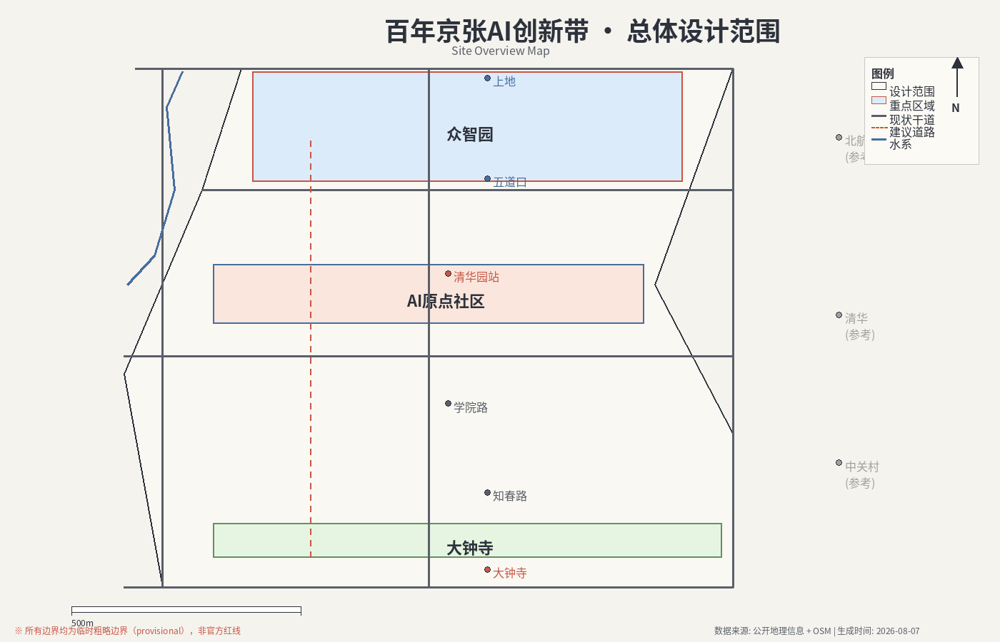
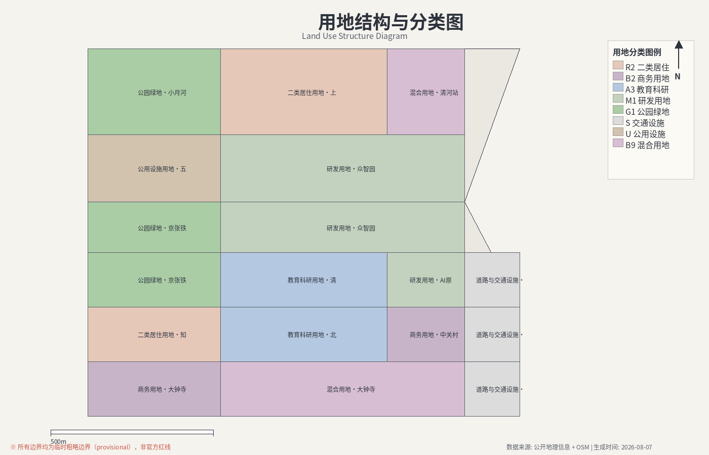
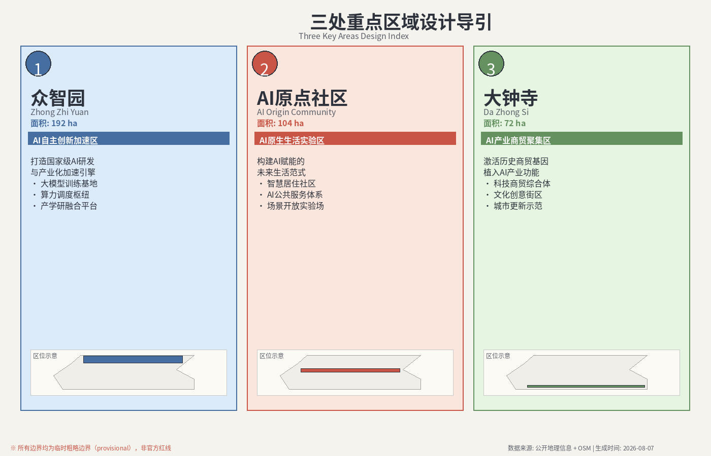
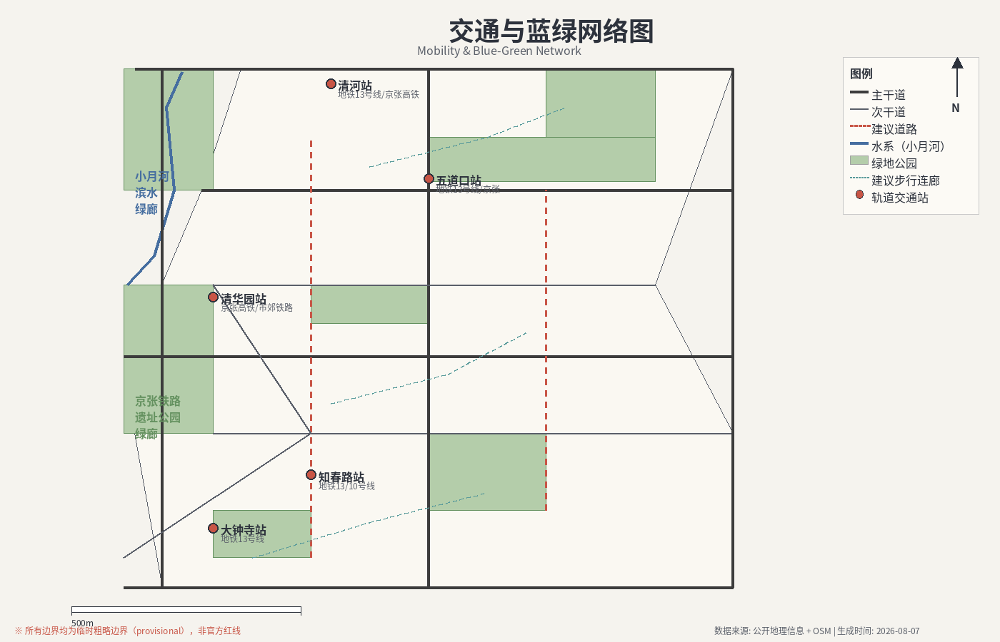
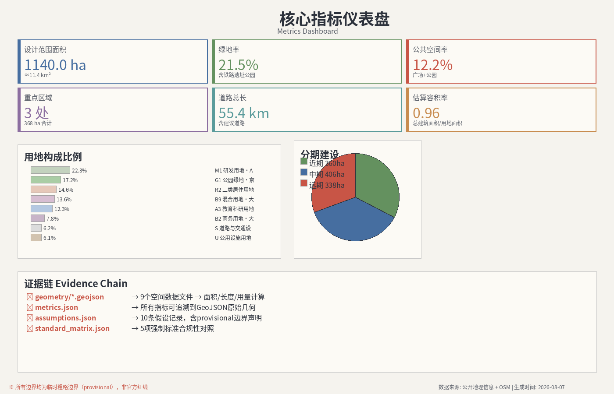

百年京张AI创新带城市设计开源征集方案
京张智脉提案以百年京张铁路走廊为骨架，构建一条贯穿海淀核心地带的AI城市觉醒轴线。 方案围绕"三区两翼"空间结构，以众智园AI加速区、AI原点社区、大钟寺产业区为三大重点设计区域， 以中关村科技服务翼与小月河场景赋能翼为两翼延展，形成"研究—设计—实施"三层次递进框架。 通过六项Agent任务的系统覆盖，整合交通、生态、产业、智慧城市四大维度， 打造可溯源、可审计、可迭代的AI城市设计开源范本。

方案采用"协调研究—整体设计—重点地区"三层递进的研究与设计框架， 覆盖从宏观战略到微观实施的完整空间梯度。
涵盖京张铁路走廊海淀段及周边影响区域，统筹区域交通、生态、产业与城市功能， 为方案策略提供宏观研究基础。
以京张铁路走廊核心区段为主体，进行整体城市设计方案， 包含空间结构、交通组织、绿地系统、功能布局等系统性设计内容。
选取三个战略节点区域进行详细设计，涵盖众智园AI加速区、AI原点社区、 大钟寺产业区，深入建筑群尺度方案。


以京张铁路走廊为脊梁，构建"三核心区+两赋能翼"的空间组织架构， 实现AI产业集聚、城市更新与场景创新的空间耦合。
京张走廊北段核心产业引擎，以AI研发、算力基础设施、 产学研协同为驱动，构建国家级AI产业加速平台。
以原京张铁路站点区域为中心，打造AI技术全场景应用的 未来社区示范点，融合居住、办公、商业与智慧公共服务。
依托既有商贸基础，推动产业升级与数字化改造， 建设AI赋能的智慧商贸与科技服务融合区。
依托中关村科技资源优势，延展研发服务、技术转移、 创新孵化等科技服务功能，形成东翼科技服务走廊。
以小月河生态廊道为脉络，串联AI应用场景， 构建绿色智慧的生活服务与公众参与示范带。

依据征集要求，方案系统性覆盖六项Agent核心任务， 确保从空间分析到智慧运营的全链条技术闭环。
用地结构、空间权属、开发强度与资源配置的系统化分析。
交通网络优化、公共交通衔接、慢行系统与TOD节点设计。
生态廊道、绿地系统、海绵城市与生物多样性策略。
AI产业链布局、功能混合策略与产业升级路径设计。
城市信息模型、数字孪生、AI治理平台与数据基础设施。
分期建设、资金模型、公众参与机制与可持续运营方案。
基于方案几何数据自动计算的关键指标。所有指标均可溯源至对应的几何文件与计算公式。 数据置信度标注为高/中/未知。

方案所有数据来源均标注类型与权限等级，严格区分官方公开数据、 仓库处理参考与Agent推断数据，确保提交材料的可审计性。
明确方案建立的关键假设及其影响范围， 确保审阅者理解方案的适用边界与后续验证需求。
详细监管控制指标（道路红线、产权边界、市政管线、工程约束等） 必须从官方附件中确认后方可用于法定用途。
影响：本方案包仅可作为基于已有官方边界与提交设计层的正式AI提交进行审阅； 法定控制指标仍需专业确认。
状态：待专业确认方案使用的场地边界与重点地区边界均为暂定边界（provisional）， 系基于公开数据推断生成。正式红线边界需以官方发布为准。
状态：暂定 → 待官方红线替换官方场地包中未提供已批准的容积率控制数据，方案中 floor_area_ratio 指标标记为未知。 后续应在官方数据补充后重新计算。
状态：数据缺失建筑基底面积（building_footprint_area_sqm）来源数据的置信度为中等， 可能在个别区域存在遗漏或精度不足，后续需配合实地调查核实。
状态：中等置信度方案提交前的自动化质量检查结果。每项检查对应特定的文件与严重性等级， 确保提交包的完整性与合规性。
暂定边界已生成；专业评分前需替换为官方红线。
目标：geometry/site_boundary.geojson
三个重点地区边界为暂定；专业评分前需替换为官方多边形。
目标：geometry/key_areas.geojson
初始用地多边形系由场地边界分割生成。
目标：geometry/land_use.geojson
静态HTML可视化已生成，无外部依赖。
目标：visual/index.html
方案文档已包含标准引用、设计深度条目、几何数据、指标、来源与假设。
目标：proposal.md